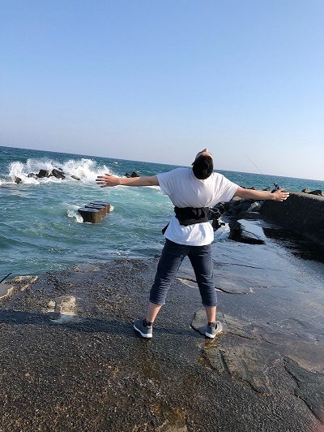

■資格の取りやすさ
資格取得講座が34種類あり、授業を受けながら資格取得を目指せる
■海外環境に触れる機会の多さ
海外への留学先と第三カ国語の選択肢の広さ
■FabLab
■AIの時代についていけていない
周りにあるデバイスを駆使した授業なのか
■自分が満足できない
楽しいと思える、達成感を味わえる機会の無さ

自分が満足のいく、達成感を感じるモノを作り上げていきたい。私は、学校が嫌いだ。今までもこれからもきっとそうだろう。変わる、変えることも難しいだろう。
ただそれ以上に負けず嫌いであり、あきらめることも嫌いだ。始めたからには最後まで貫きたい。単純だが自分との勝負であるが故に簡単にはいかない。
そういった覚悟も含め、この二年で自分に満足がしたい。